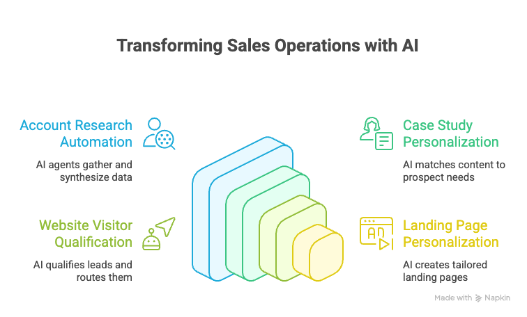
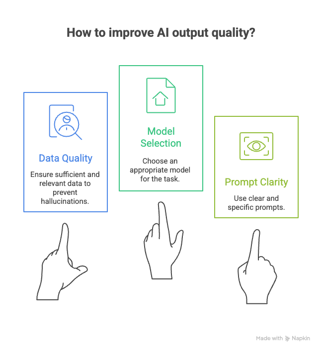

I've been building agents for over a year and a half. As a non-developer, I have focused on using low-code / no-code agent building products and I have been quite successful in delivering business value to my clients. It has been nothing short of amazing the use cases I have been able to tackle without being a developer or writing custom code. A few examples are listed below.

I get asked often about how I am able to guarantee the quality of the output and my response is always the same -

There has been one challenge that I have struggled with and that is overuse of LLMs to do things that I know there are probably faster and cheaper solutions. I remember showing some of my agents to a software developer and he could not understand why I was using an LLM to do some of the tasks and not just writing python or javascript.
As a non-developer, it is easy to use the LLM as the solution to all needs. It is extremely versatile but it is also very slow and unnecessarily expensive.
Examples of cases where I have used an LLM that there is probably a better way -
Lately, I have started building more and more complicated agents and they take minutes to run and are extremely slow and the API costs are high. I am always curious how deep research agents are able to scrape through 50+ articles and analyze them and respond relatively quickly. The short answer is that they leverage a lot of python code to speed up a lot of operations.
So I have been exploring ways to speed up the processing of my agents and I have come to the realization that a key aspect of agent builders will be the ability to run custom functions (python / javascript). Where I can import my own libraries and have the right combination of deterministic, fast, cheap execution combined with the creative and reasoning tasks that LLMs are good at.
Custom functions excel at deterministic, computational tasks while LLMs excel at creative, interpretive, and reasoning tasks. The sweet spot is using custom functions for the heavy lifting (data processing, API calls, calculations) and LLMs for the intelligent analysis of the results.
So here is an example to make this real. Let's say I need to research Tesla and this requires running 5 Google searches that return 5 URLs each and 10 YouTube videos. -
The Process: Your agent builder workflow chains together multiple LLM API calls. The first call generates Tesla research queries, which you manually input into subsequent steps. Each of the 25 webpages gets processed through individual LLM API calls where you paste the full HTML content as input tokens. YouTube video transcripts (when you can find them) go through separate LLM processing steps.
The agent builder handles the orchestration, but every step involves expensive LLM token consumption. Each webpage's full HTML content becomes input tokens, the LLM processes and summarizes it, then outputs summary tokens. This gets repeated 25 times for web content plus 10 times for video transcripts.
The Process: Your agent builder orchestrates a hybrid workflow. Custom functions handle data gathering: automated Google searches return 25 URLs, YouTube API calls collect 10 video IDs, web scraping functions extract clean content, and transcript APIs pull video text. All this raw data collection happens through specialized APIs designed for these tasks.
Only after gathering complete, clean content does the workflow hand off to LLM APIs for the analysis phase. The LLM receives curated, relevant content rather than raw HTML, making the analysis more focused and effective.
This does mean that non-developers like me now need to get comfortable generating custom functions.
The good news for non-developers like me is that I can use LLMs to generate a lot of the code needed to generate the custom functions. This is the beauty of "vibe coding" and a great example of a use case where "vibe coding" shines. These are small isolated snippets of code that do something very specific and I don't have to spend too much time understanding the syntax etc. It is easy to test and debug them and once we get the output we want, we are done.
So what should agent builders provide to support custom functions -
Intuitive Function Templates and Guided Setup The platform should provide pre-structured function templates that eliminate the need to understand complex data handling conventions or platform-specific syntax.
Integrated Development Environment with Real-Time Feedback Users need robust debugging capabilities built directly into the interface with real-time error highlighting and clear feedback when functions succeed or fail.
Comprehensive Built-In Service Library The platform must provide extensive built-in capabilities—web scraping, API integrations, data processing libraries, and AI services—that work out of the box without requiring external service management.
Transparent Execution and Dependency Management The platform should handle all library management, versioning, and execution environment concerns behind the scenes while providing clear visibility into what functions are doing.
The differentiating factor will be how accessible these platforms make custom function development for users without programming backgrounds.